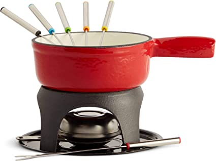
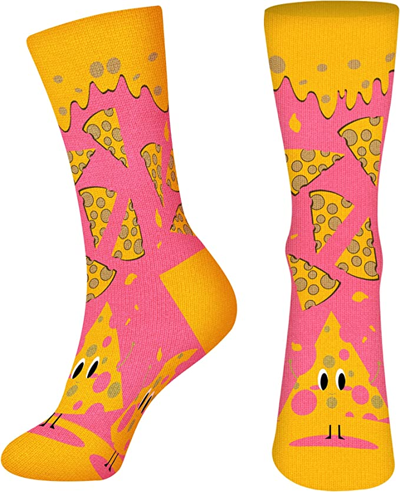
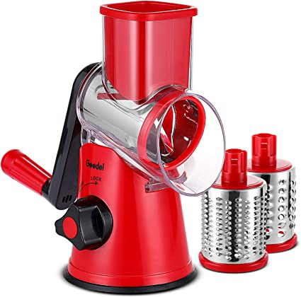

Liz Truss, The Dairy Queen is in!
We finally have a new Prime Minister. Even though Boris was doing a great job throwing grenades and parties and being flown around in jets through the summer, while the country struggled with the Cost of Living crisis and the prospect of not being able to heat theirs homes this winter. The Conservative party has finally decided who will lead our great nation after a long and depressingly boring fight between Dishy Rishi and Thick Lizzy and the winner is our own Dairy Queen. You will remember almost nothing about Liz Truss apart from her haunting staged pictures and her famous speech about cheese(very...long...awkward...pause...)That. Is. A. Dis-grace. The wooden politician delivered this notorious speech during the Conservative Party Conference in 2014 but it will stay in our nightmares forever. Using our new leader passion for the dairy product as inspiration, we look at a few products that will help you enjoy your cheese even more.

Fondue is fun to do
To celebrate her victory we imagine Liz will throw a house warming party at no. 10. We can only imagine how fun this will be, she does look like a bundle of fun doesn't she? So a foundue set will be the highlight of such occasion. The set comes with 6 forks which should be more than enough for all her friends. Visit Shop

Cheese lovers perfect gift
This would be a great gift to a cheese lover like Liz Truss, she has gone to great lengths to emulate Margaret Thatcher, from lowering her voice tone to her staged pictures and dress sense but underneath it all we think she is a fun loving maverick and would love to wear something comic under her stateswoman outfits. They come in a one size fits all, which sounds a lot like the Conservative party policies. Visit Shop

A Great Grater
We imagine it won't take long for the personality of our Prime Minister to grate on the nation so to celebrate that we have chosen this brilliant cheese grater. This model is rotatory which is how we could describe the occupants of no 10 in the last year. You can use this cheese grater to make pizzas which is a great food for parties, or work events as they are known at Downing Street. Visit Shop